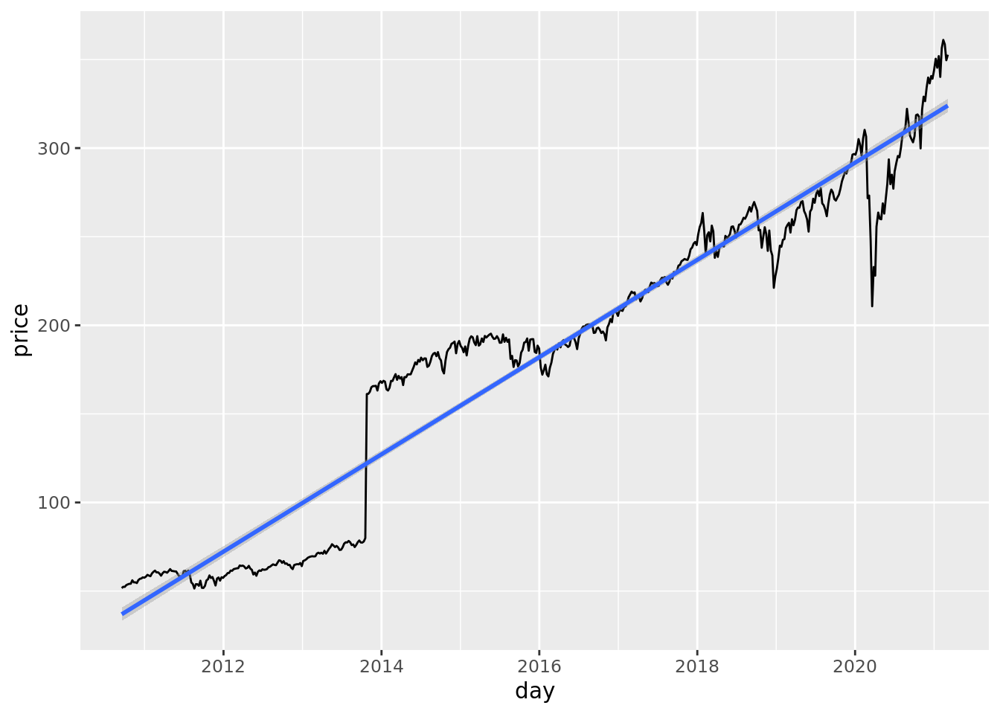
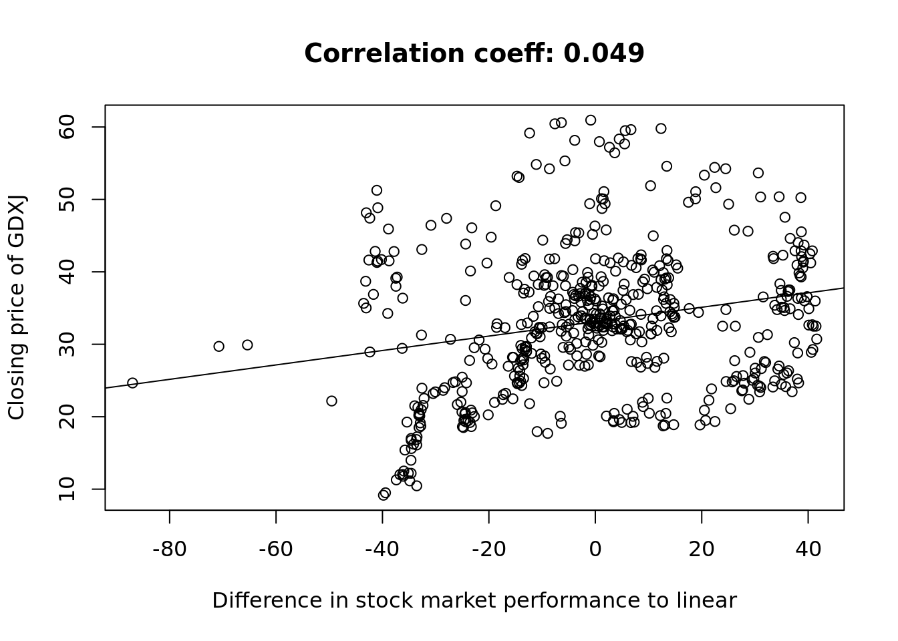
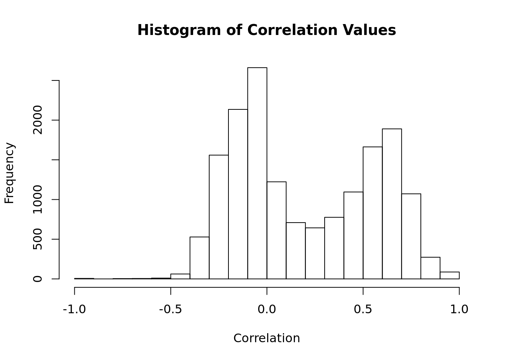
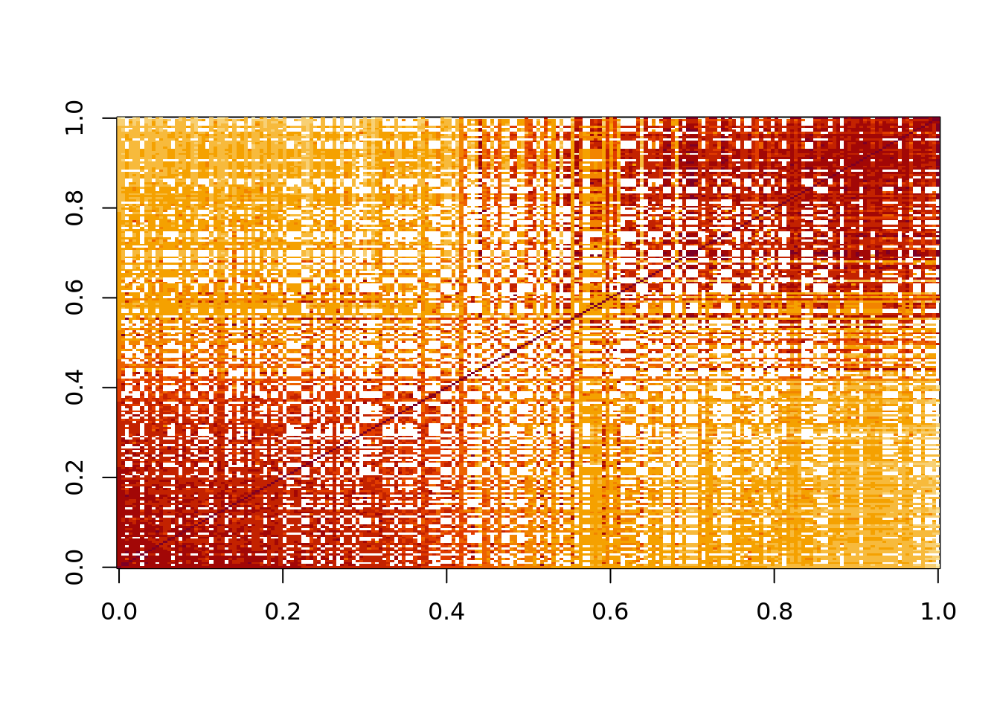

Chapter 7 Homework 3 Project
library(caret)
library(tidyverse)tweets_raw <- read_csv("Datasets/non_retweets_dc_inaug_steal.csv")##
## ── Column specification ──────────────────────────────────────────────────
## cols(
## .default = col_double(),
## `#abddarb` = col_character(),
## created_at = col_datetime(format = ""),
## tweet_body = col_character()
## )
## ℹ Use `spec()` for the full column specifications.## Warning: 2 parsing failures.
## row col expected actual file
## 83 -- 843 columns 781 columns 'Datasets/non_retweets_dc_inaug_steal.csv'
## 84 -- 843 columns 63 columns 'Datasets/non_retweets_dc_inaug_steal.csv'dim(tweets_raw)## [1] 16005 8437.1 HW1
This homework is to meant for you to brush up some prerequisites. If some of these topics are new to you, feel free to ask on Piazza how to approach these. Context - Is gold price inversely related to the market?
There’s a belief that the money from the stock market will escape to gold when the stock market is not doing well. The demand for gold and the expectations for the market are often reflected in the pricing of the assets, i.e. high demand yields high gold prices and upward expectations also lead to higher stock prices.
7.1.1 Q1
Please use the ‘TIME_SERIES_WEEKLY’ API listed on Alpha Vantage to get the weekly time series data for
‘VOO’: an arbitrarily chosen ETF that tracks the market
‘GDXJ’: an arbitrarily chosen ETF for goldFor this problem, simply show the code for your query and print out the number of weeks of data for each time series. Your API key should NOT appear in your solutions but the URL you’re using and the query should be shown.
Hint:
You will need to claim a free API key before you can query data
The functions in httr should be helpful, here is some sample code if you have not done so before.#library(httr)
# url_VOO <- "https://www.alphavantage.co/query?function=TIME_SERIES_WEEKLY&symbol=VOO&apikey=SEDREZCZEW7NAOQK"
# url_GDXJ <- "https://www.alphavantage.co/query?function=TIME_SERIES_WEEKLY&symbol=GDXJ&apikey=SEDREZCZEW7NAOQK"
#
# responce <- GET(url = url_VOO, query = params)
function_name <- "TIME_SERIES_WEEKLY"
stock_ticker <- "VOO"
my_data_type <-"csv"
output_size <- "full"
api_call <- paste0("https://www.alphavantage.co/query?function=",
function_name,
"&symbol=",
stock_ticker,
"&outputsize=",
output_size,
"&apikey=",
api_key,
"&datatype=",
my_data_type)
VOO <- read.csv(url(api_call))
head(VOO)## timestamp open high low close volume
## 1 2021-03-05 354.55 359.3900 341.915 352.69 30781752
## 2 2021-02-26 355.84 360.5800 347.710 349.59 26216064
## 3 2021-02-19 362.15 362.3700 356.490 358.59 13120646
## 4 2021-02-12 357.92 361.1900 356.300 361.05 12023707
## 5 2021-02-05 343.63 357.1312 341.400 356.44 13716229
## 6 2021-01-29 352.71 354.6450 338.570 340.18 20225448#For VOO
function_name <- "TIME_SERIES_WEEKLY"
stock_ticker <- "GDXJ"
my_data_type <-"csv"
output_size <- "full"
api_call <- paste0("https://www.alphavantage.co/query?function=",
function_name,
"&symbol=",
stock_ticker,
"&outputsize=",
output_size,
"&apikey=",
api_key,
"&datatype=",
my_data_type)
GDXJ <- read.csv(url(api_call))
head(GDXJ)## timestamp open high low close volume
## 1 2021-03-05 46.54 46.8700 44.000 45.61 40024061
## 2 2021-02-26 48.29 50.6500 45.065 45.76 48304711
## 3 2021-02-19 49.15 50.3782 47.040 47.54 24748594
## 4 2021-02-12 51.30 51.6700 49.250 50.25 26097487
## 5 2021-02-05 53.21 54.3200 48.280 50.37 39557597
## 6 2021-01-29 50.65 52.3100 47.590 50.08 361774707.1.2 Q2
Please plot the close price for VOO against the different weeks and overlay the regression line for this scatter plot.
You do not need to label your week index but the prices should be labeled.
library(ggplot2)
library(dplyr)
VOO$timestamp <- as.Date(VOO$timestamp)
ggplot(VOO, aes(x = timestamp,y = close)) +
geom_line() +
xlab("day") +
ylab("price") +
geom_smooth(method = "lm", formula = y~x)
7.1.3 Q3
Please plot the residuals from the regression in Q2 against the close price of GDXJ.
label your axes with units. Your title should include the correlation value, rounded to the nearest hundredth. Please show the code that demonstrates your decision on merging the 2 time series.
linear <- lm(VOO$close ~ VOO$timestamp)
subset_GDXJ <- GDXJ[1:length(linear$residuals),]
#subset_GDXJ
gold_vs_stock <- lm(subset_GDXJ$close ~ linear$residuals)
summary(gold_vs_stock)##
## Call:
## lm(formula = subset_GDXJ$close ~ linear$residuals)
##
## Residuals:
## Min 1Q Median 3Q Max
## -20.0033 -6.6721 -0.3523 5.3648 28.1189
##
## Coefficients:
## Estimate Std. Error t value Pr(>|t|)
## (Intercept) 33.12556 0.40671 81.45 < 2e-16 ***
## linear$residuals 0.09952 0.01813 5.49 6.16e-08 ***
## ---
## Signif. codes: 0 '***' 0.001 '**' 0.01 '*' 0.05 '.' 0.1 ' ' 1
##
## Residual standard error: 9.512 on 545 degrees of freedom
## Multiple R-squared: 0.05241, Adjusted R-squared: 0.05067
## F-statistic: 30.14 on 1 and 545 DF, p-value: 6.162e-08plot(x = linear$residuals, y = subset_GDXJ$close,
xlab="Difference in stock market performance to linear",
ylab = "Closing price of GDXJ",
main = "Correlation coeff: 0.049",
abline(lm(subset_GDXJ$close ~ linear$residuals)))
7.1.4 Q4
Relying only on the scatter plot, would you say the belief between gold and the market is supported or rejected? Please explain.
Relying on the scatter plot and the line I plotted, gold is not inversely related. In fact, when the market it beating its performace, on average gold is closing higher as well. Also, when the stock market is doing really poorly (compared to the linear regression) gold also closes really low as seen by the strong tail around -40.
7.2 R Markdown
library('jsonlite')
library('RJSONIO')votes <- fromJSON('Datasets/votes.json')
senator_id <-
sort(names(votes))
session_id <- sort(unique(names(unlist(unname(
votes
)))))
voting_matrix <-
matrix(NA, nrow = length(session_id), ncol = length(senator_id))
rownames(voting_matrix) <- session_id
colnames(voting_matrix) <- senator_id
# Making the matrix
for(i in senator_id) {
for (j in session_id) {
if (j %in% names(votes[[i]])) {
voting_matrix[j, i] <- votes[[i]][[j]]
}
}
}
# Dimensions
print(paste(
"Number of rows = ",
as.character(nrow(voting_matrix)),
", number of columns = ",
as.character(ncol(voting_matrix))
))## [1] "Number of rows = 803 , number of columns = 231"# Percentage of matrix that does not contain -1, 1 or 0
print(paste(as.character((
sum(is.na(voting_matrix)) + sum(voting_matrix == -9999, na.rm = TRUE)
) / (
nrow(voting_matrix) * ncol(voting_matrix)
) * 100), "%"))## [1] "56.737451008933 %"cor_matrix <- cor(voting_matrix, use = "pairwise.complete.obs")## Warning in cor(voting_matrix, use = "pairwise.complete.obs"): the standard
## deviation is zerolower_cor <- cor_matrix[lower.tri(cor_matrix)]hist(lower_cor, main = "Histogram of Correlation Values", xlab = "Correlation")
left <- lower_cor[lower_cor < 0.25]
right <- lower_cor[lower_cor >= 0.25]
quantile(left, na.rm = TRUE)## 0% 25% 50% 75% 100%
## -1.000000000 -0.193671052 -0.086741418 -0.002155501 0.249932462quantile(right, na.rm = TRUE)## 0% 25% 50% 75% 100%
## 0.2501651 0.4675799 0.5855325 0.6795527 1.0000000cor_with_mitch <- cor_matrix["S174", ]
not_NA <- names(cor_with_mitch[!is.na(cor_with_mitch)])
mitch_cor_mat <- cor_matrix[ , not_NA]
mitch_order <- rev(names(sort(mitch_cor_mat["S174", ])))
mitch_cor_mat <- mitch_cor_mat[ mitch_order , mitch_order]# Visualize
image(mitch_cor_mat)
voters <- fromJSON("Datasets/voters.json")
cor_with_mitch <- mitch_cor_mat[1, ]
# Defining Those with Negative Correlation with Mitch
neg_cor_with_mitch <- names(cor_with_mitch[cor_with_mitch < 0])
# Defining Possible Republicans
poss_republican <-
names(cor_with_mitch[cor_with_mitch >= 0.2 &
names(cor_with_mitch) != "S174"])
# Finding Those with avg greater than 0.2 correlation with poss_repubicans
subset_mat <- mitch_cor_mat[neg_cor_with_mitch, poss_republican]
averages <- rowMeans(subset_mat, na.rm = TRUE)
senators_criteria <- names(averages[averages > 0.2])
senator_info <- voters[senators_criteria]
print(senator_info)## $S374
## first_name last_name party state
## "Tom" "Cotton" "R" "AR"
##
## $S118
## first_name last_name party state
## "Orrin" "Hatch" "R" "UT"
##
## $S300
## first_name last_name party state
## "Richard" "Burr" "R" "NC"
##
## $S382
## first_name last_name party state
## "Ben" "Sasse" "R" "NE"
##
## $S383
## first_name last_name party state
## "Dan" "Sullivan" "R" "AK"lisa_id <- names(which(unlist(voters) == "Murkowski"))
lisa_id <- "S157"
cor_with_lisa <- cor_matrix[lisa_id, ]
cor_max <- names(which.max(cor_with_lisa[names(cor_with_lisa) != lisa_id]))
cor_min <- names(which.min(cor_with_lisa))
ols <- lm(voting_matrix[ , lisa_id] ~ voting_matrix[ , cor_max] + voting_matrix[ , cor_min])
summary(ols)##
## Call:
## lm(formula = voting_matrix[, lisa_id] ~ voting_matrix[, cor_max] +
## voting_matrix[, cor_min])
##
## Residuals:
## Min 1Q Median 3Q Max
## -1.22610 -0.00646 0.06774 0.06774 1.48007
##
## Coefficients:
## Estimate Std. Error t value Pr(>|t|)
## (Intercept) 0.26319 0.04690 5.612 8.27e-08 ***
## voting_matrix[, cor_max] 0.70617 0.04556 15.500 < 2e-16 ***
## voting_matrix[, cor_min] -0.03710 0.03523 -1.053 0.294
## ---
## Signif. codes: 0 '***' 0.001 '**' 0.01 '*' 0.05 '.' 0.1 ' ' 1
##
## Residual standard error: 0.4139 on 165 degrees of freedom
## (635 observations deleted due to missingness)
## Multiple R-squared: 0.6113, Adjusted R-squared: 0.6065
## F-statistic: 129.7 on 2 and 165 DF, p-value: < 2.2e-16ols <- lm(voting_matrix[ , lisa_id] ~ voting_matrix[ , cor_max])
res <- voting_matrix[ , lisa_id] - cbind(1, voting_matrix[ , cor_max]) %*% ols$coefficients
cor_with_res <-function(x){return(cor(voting_matrix[ , x], res, use = "pairwise.complete.obs"))}
senator_id_nolisa <- senator_id[senator_id != lisa_id]
all_cor_with_res <- sapply(senator_id_nolisa, cor_with_res)## Warning in cor(voting_matrix[, x], res, use = "pairwise.complete.obs"):
## the standard deviation is zeromax_cor_with_res <- names(which.max(all_cor_with_res))
ols2 <- lm(voting_matrix[ , lisa_id] ~ voting_matrix[ , cor_max] + voting_matrix[ , max_cor_with_res])
summary(ols2)##
## Call:
## lm(formula = voting_matrix[, lisa_id] ~ voting_matrix[, cor_max] +
## voting_matrix[, max_cor_with_res])
##
## Residuals:
## Min 1Q Median 3Q Max
## -1.19242 0.05088 0.05088 0.05088 0.91741
##
## Coefficients:
## Estimate Std. Error t value Pr(>|t|)
## (Intercept) 0.01585 0.04289 0.370 0.712
## voting_matrix[, cor_max] 0.37835 0.05110 7.404 6.06e-12
## voting_matrix[, max_cor_with_res] 0.55491 0.05926 9.364 < 2e-16
##
## (Intercept)
## voting_matrix[, cor_max] ***
## voting_matrix[, max_cor_with_res] ***
## ---
## Signif. codes: 0 '***' 0.001 '**' 0.01 '*' 0.05 '.' 0.1 ' ' 1
##
## Residual standard error: 0.3441 on 168 degrees of freedom
## (632 observations deleted due to missingness)
## Multiple R-squared: 0.7304, Adjusted R-squared: 0.7272
## F-statistic: 227.6 on 2 and 168 DF, p-value: < 2.2e-16